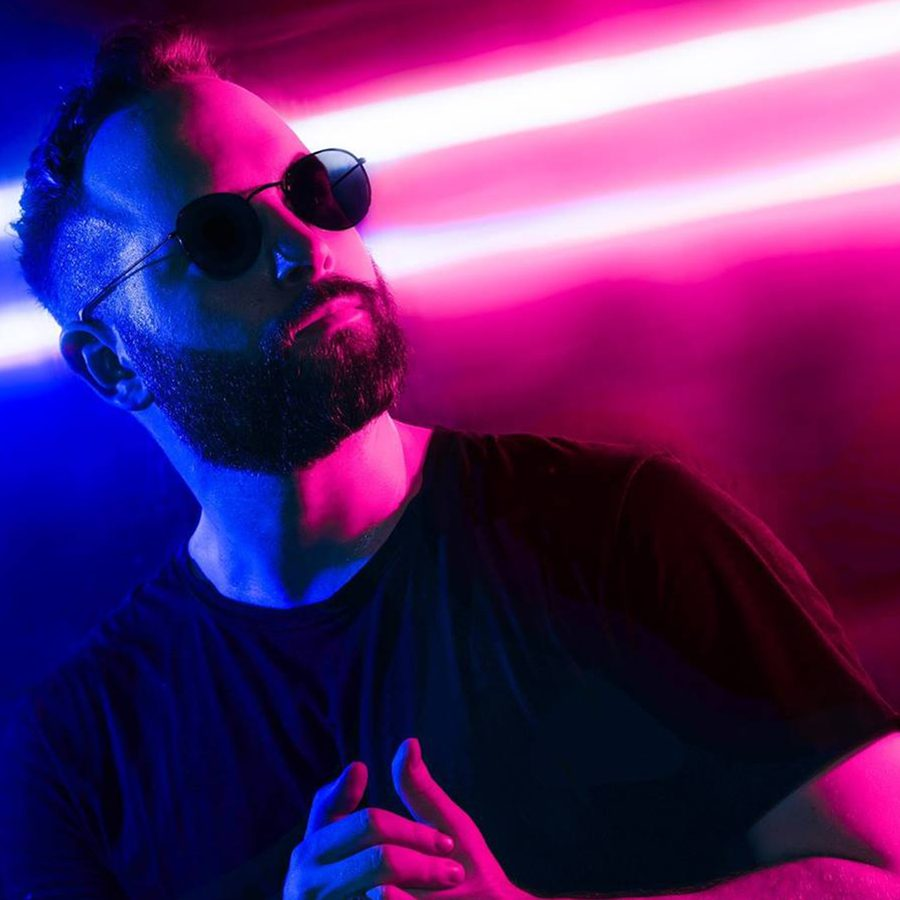

VIVID Creates a World of Color on Vocal Future House Cut “Higher”


UK stable Enhanced continues to show it’s a force to be reckoned with in the world of EDM, trance and progressive, hitting all these touchpoints across their different sub-labels. After celebrating 300 releases last year, Enhanced has powered on to keep things going strong in 2018. Home to huge names like Steve Brian and label-heads Tritonal, it’s equally known for introducing a ton of new talent into the scene. We’re hosting one such label debut now through our Track of the Day series.
Tokyo producer VIVID is a rising name in EDM circles, though he’s already earned himself support from big players like Don Diablo, Tiësto, Martin Garrix, and David Guetta. With “Higher,” he’s delivered a polished mainstage anthem of the highest order. Full of bright, colourful melodies and saturated sing-along vocals, its heavily processed vox are showcased in the breakdown as a prelude to the hyper burst of future house energy that propels its drive after the drop.
Available August 10 via Enhanced Music.
Buy VIVID’s “Higher” here.
Follow VIVID on Facebook | Twitter | SoundCloud
Follow Enhanced Music on Facebook | Twitter | SoundCloud